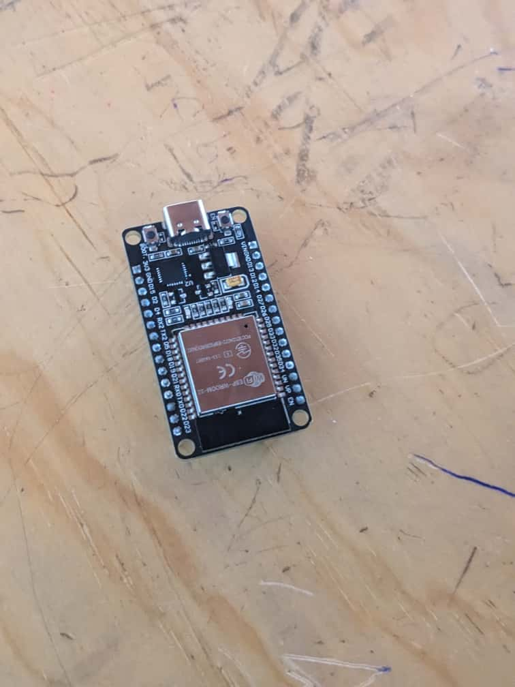
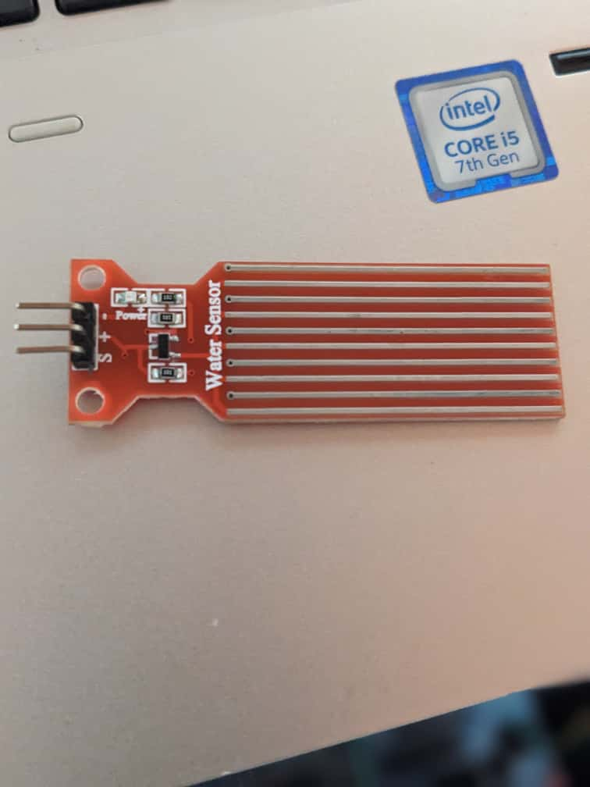
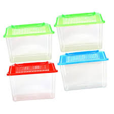
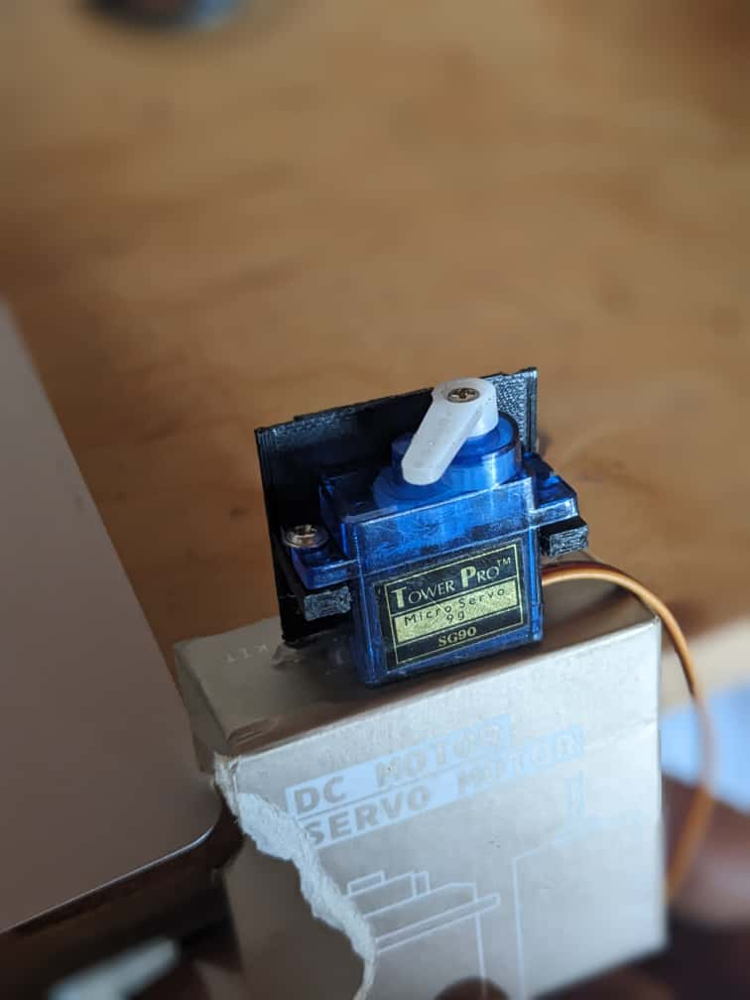
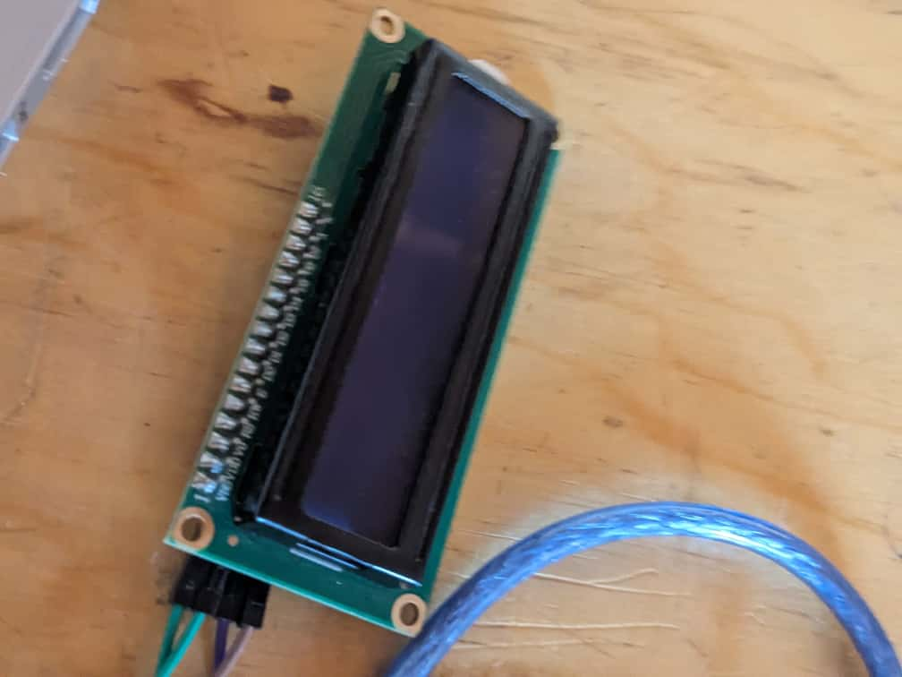
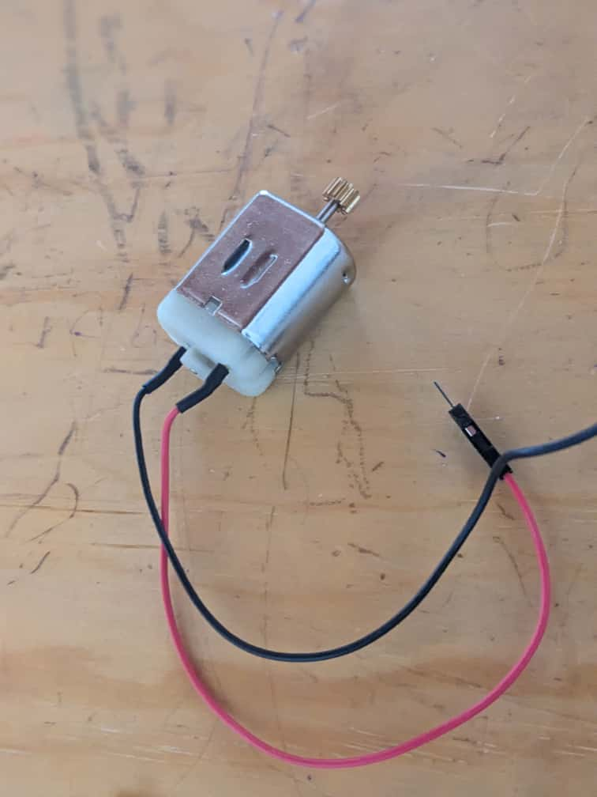

SMART PET FEEDER
This is all about how to feeder my pet at any time and at any place
This is all about how to feeder my pet at any time and at any place
An automatic pet feeder is a device that dispenses food to pets at predetermined times and quantities, allowing owners to manage their pet's nutrition even when they are not present. These feeders are often programmable and can be controlled via a smartphone app, offering features like scheduling, portion control, and remote feeding. They are designed to help maintain a consistent feeding routine and ensure a pet is fed on time, reducing stress for both the owner and the pet.
An IoT automatic pet feeder works by using a microcontroller (ESP32) to control a servo motor that dispenses food. The microcontroller receives commands from a mobile app via the internet and cloud services, triggering the motor to rotate and release a measured amount of food from a food reservoir into the pet's bowl. Sensors like weight or ultrasonic sensors can provide feedback to the system or the user, and some advanced versions may even include cameras for monitoring.
Project summary, current status, and next steps — ready to paste into your report or portfolio.
This is the the microcontroller of the whole system where all the data are sent then after the microcontroller sends them to theactuactor as the output as the people's brain
This is the sensor that is responsible to sense or detect water level in our container
It is responsible in storing the food that our pet is going to eat /IT acts as the stock
It is responsible for turning in order for food to move
It will show us the status of what is happening with our system.
It will act as the the plate where the food and water will be
A 12V power supply is an electrical device that converts a higher AC voltage (like from a wall outlet) into a stable, regulated 5V DC output.
Connecting wires are used to create electrical connections between two points, often involving joining wires together using methods like wire nuts, screw terminals, or crimping

This is responsible for pumping water from the tan to the bowl

Here’s a screenshot of block diagram and flow chart


This circuit is designed as an Automatic Water Level Controller. Based on the detected water level, the ESP32 controls a 5V relay to turn a water pump on or off. The water level is also displayed on a LCD. The circuit includes a resistor and a BC547 transistor to interface the ESP32 with the relay, and a 1N4007 diode for protection against voltage spikes from the relay coil.
Description: A microcontroller with Wi-Fi and Bluetooth capabilities.
Pins: EN, VP, VN, D34, D35, D32, D33, D25, D26, D27, D14, D12, D13, GND, VIN, 3V3, D15, D2, D4, RX2, TX2, D5, D18, D19, D21, RX0, TX0, D22, D23, BOOT
Description: An electromechanical switch used to control the water pump.
Pins: Normally Open, Common terminal, Normally Closed, IN, GND, VCC
Description: A pump used to move water based on the control signal from the relay.
Pins: VCC, GND
Description: A small display to show the water level.
Pins: GND, VDD, SCK, SDA
Description: A resistor used to limit current to the base of the BC547 transistor.
Properties: Resistance: 1000 Ohms
Description: A diode used to protect the circuit from reverse voltage spikes.
Pins: Cathode, Anode
Description: A general-purpose NPN transistor.
Pins: Collector, Base, Emitter
#include WiFi.h;
#include Adafruit_MQTT.h;
#include Adafruit_MQTT_Client.h;
#include ESP32Servo.h;
-------- WiFi Settings --------
#defineWLAN_SSID xxxx;
#defineWLAN_PASS xxxxxxxxx;
-------- Adafruit IO Settings --------
#define AIO_SERVER ;io.adafruit.com;
#defineAIO_SERVERPORT 1883;
#define AIO_USERNAMExxxxxx;
#defineAIO_KEY xxxxxx;
-------- Pin Setup --------
#defineRelayPin19
#defineServoPin14
#defineWaterSensorPin34
Servo myservo;
-------- WiFi Client and MQTT Setup --------
WiFiClientclient;
Adafruit_MQTT_Client mqtt(client,AIO_SERVER,AIO_SERVERPORT",AIO_USERNAME , AIO_KEY)
// -------- Feeds --------
Adafruit_MQTT_Subscribe relayFeed = Adafruit_MQTT_Subscribe(&mqtt, AIO_USERNAME "/feeds/relay");
Adafruit_MQTT_Subscribe servoFeed = Adafruit_MQTT_Subscribe(&mqtt, AIO_USERNAME "/feeds/servo");
Adafruit_MQTT_Publish waterFeed = Adafruit_MQTT_Publish(&mqtt, AIO_USERNAME "/feeds/waterlevel");
void MQTT_connect();
void setup() {
Serial.begin(115200);
delay(10);
pinMode(RelayPin, OUTPUT);
digitalWrite(RelayPin, LOW);
myservo.attach(ServoPin);
myservo.write(0); // Initial position
pinMode(WaterSensorPin, INPUT);
// Connect to Wi-Fi
Serial.print("Connecting to WiFi: ");
Serial.println(WLAN_SSID);
WiFi.begin(WLAN_SSID, WLAN_PASS);
while (WiFi.status() != WL_CONNECTED) {
delay(500);
Serial.print(".");
}
Serial.println("\nWiFi connected!");
// Setup MQTT subscriptions
mqtt.subscribe(&relayFeed);
mqtt.subscribe(&servoFeed);
}
void loop() {
MQTT_connect();
// Check incoming messages
Adafruit_MQTT_Subscribe *subscription;
while ((subscription = mqtt.readSubscription(2000))) {
if (subscription == &relayFeed) {
String value = (char *)relayFeed.lastread;
Serial.print("Relay feed value: ");
Serial.println(value);
if (value == "ON") {
digitalWrite(RelayPin, HIGH);
Serial.println("Relay ON");
} else {
digitalWrite(RelayPin, LOW);
Serial.println("Relay OFF");
}
}
if (subscription == &servoFeed) {
String value = (char *)servoFeed.lastread;
Serial.print("Servo feed value: ");
Serial.println(value);
if (value == "ON") {
myservo.write(180);
Serial.println("Servo ON");
} else {
myservo.write(0);
Serial.println("Servo OFF");
}
}
}
// --- Read water sensor and publish ---
int waterRaw = analogRead(WaterSensorPin);
// Convert analog value (0-4095) to percentage 0-100%
float waterPercent = map(waterRaw, 0, 4095, 0, 100);
if (!waterFeed.publish(waterPercent)) {
Serial.println("Failed to publish water level");
} else {
Serial.print("Water level published: ");
Serial.print(waterPercent);
Serial.println("%");
}
delay(5000); // Publish every 5 seconds
}
// -------- MQTT Connection Function --------
void MQTT_connect() {
int8_t ret;
if (mqtt.connected()) return;
Serial.print("Connecting to Adafruit IO... ");
uint8_t retries = 3;
while ((ret = mqtt.connect()) != 0) {
Serial.println(mqtt.connectErrorString(ret));
Serial.println("Retrying MQTT connection...");
mqtt.disconnect();
delay(5000);
retries--;
if (retries == 0) {
while (true);
}
}
Serial.println("MQTT connected!");
}